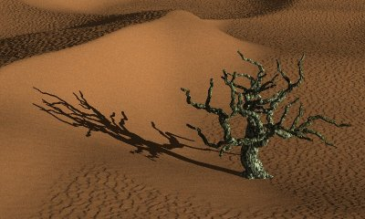

Geomorph - News - Archive
What's
going on with Geomorph (June the 30th, 2006)
Version 0.31
(November the 25th, 2005)
Update
about version 0.31 (November
the 28th)
What's
new in version 0.30 (October the 31st, 2005)
February
the 2nd, 2005
What's new
in version 0.22 (October the 30th, 2004)
What's new in version 0.21 (August the 16th,
2004)
What's new in
version 0.20 (May
the 7th, 2004)
What's new in version 0.12 (November
the 16th, 2003)
Replace a broken file (November
the 16th, 2003)
What's
going on with Geomorph (June the 30th, 2006)
Geomorph is not dead, though the updates are less frequent for some
very good and trivial reasons (work, family...). I also apologize for
the scarcity of the site updates, particularily for those who expected
to get their work displayed.
Version 0.40 will provide a cracks network tool, among a few other
goodies. Maybe I'll also be able to package a "Fourier Explorer"
subsystem. The internals are done, but the interface is a challenge.
There are also a few noticeable news:
- A FreeBSD port of Geomorph is now available at http://www.freshports.org/graphics/geomorph. My best thanks to Dmitry Marakasov for
providing it.
- The Gallery has been updated
with very interesting work from Marc Carson, Jaime Vives Piqueres and
Simon Donike.
- The German messages file of
the 0.31 package displays the special characters of this language
incorrectly (ß,
ü...),
because of a double UTF-8 conversion.
- If you are using the
binary, you
can get the right de.gmo file here. Login as root
and copy it like this, in a console:
cp -fv po/de.gmo
/usr/local/share/locale/de/LC_MESSAGES/geomorph.mo
- If you are using the
source, you can use the first method, or if you prefer a slower method,
you can get the right de.po file here, copy it in
~/geomorph-0.31/po, recompile and reinstall.
I also forgot to provide a link to a page exposing the development
philosophy and the contribution opportunities, written in september
2005. So here it is.
So expect to have some news from Geomorph at the beginning of the Fall,
I hope!
Patrice St-Gelais
Version 0.31
(November the 25th, 2005)
Version 0.31 fixes these bugs:
- Some users with a Nvidia video card and the Nvidia proprietary
driver were not able to display the preview at all. Version 0.31 uses
the GtkGLExt library instead of GtkGLArea, which solves the problem.
Special thanks to Vincent Le Prince for testing this change.
- With the "fill bucket":
- Use of the "subtract" option does not
crash Geomorph anymore.
- Filling up 10 areas or more (or subtracting them) does not exit
Geomorph anymore.
- The installation scripts have been corrected. A new Geomorph user
can be installed in one of 2 ways: from the uncompressed archive, or at
the first launch of Geomorph. The second one was not working because of
a typo. Furthermore, the "sed" command was used with a GNU extension
which does not work on some systems. This extension is no more used.
- The cloning function (
 )
now works without errors with a
new and unsaved document. Geomorph asks to save it before copying it.
)
now works without errors with a
new and unsaved document. Geomorph asks to save it before copying it.
- Output of comments in the geomorphrc file are now translated to
the current locale. They were written in the UTF-8 format, a concern
for French and German users.
This version doesn't add any new features.
The download and install page, plus
the FAQ, have been updated.
If you prefer to compile the program from the source, notice
that the libgtkglext and libgtkglext-devel packages are now
dependencies, replacing their libgtkglarea counterparts. The binary
includes the required library ("statically linked"), so
you don't need to search for it.
The use of hardware acceleration for OpenGL (direct rendering - DRI)
could produce instabilities when closing and opening many documents.
Furthermore, the memory problems already described in the FAQ are still
present. Unlike version 0.30, version 0.31
allows to choose if the Geomorph preview is accelerated or not. By
default, acceleration in Geomorph 0.31 is unactive, even when it is
active for other programs. Please consult this section in
the FAQ if you want to use
hardware acceleration.
Update
about version 0.31 (November the 28th)
The source package (not the binary) contains an unwanted copy of the
"geomorphrc" options file. It is located in the root directory,
~/geomorph-0.31/. If you try to run Geomorph from this directory, in
the console, after compiling or installing it, this file would be read
instead of yours, usually in ~/geomorph/. If your default Geomorph
directory is suddenly /home/patrice/geomorph, this is what is
happening! It does not happen if you start Geomorph from elsewhere, for
instance from the icon on your desktop. If you keep the geomorph-0.31
directory, I suggest that you delete the file to avoid future errors.
Thanks to Cyril Brûlebois for submitting the problem.
What's new in version 0.30
(October the 31st, 2005)
A new version of Geomorph is finally available, after one year!
The migration towards the GTK2 libraries explains most of the work. It
does not improve the interface or the features of Geomorph, at least
for now. This is a long term investment, to avoid obsolescence.
But version 0.30 also provides a lot of improvements.
For instance, if you like desert or seashore landscapes, you'll be able
to use Geomorph for creating dunes and ripples.

Dunes and ripples produced with Geomorph
There are also optimizations which should increase the speed of drawing
and make easier the edition of height fields of 1024x1024 pixels or
larger.
In the documentation, there is a new tools index and a Povray section, which contains among
others a
texturing section.
 Povray textures
provided with Geomorph
Povray textures
provided with Geomorph
The new sections contain a lot of images, because it's easier to
understand new concepts from examples. It's a bit slow on a 56k line,
sorry! The documentation is now distributed separately from the
software, under a Common
Creative license.
There are now more Povray textures and scenes installed when creating a
new user directory, and many of them have been improved when writing
the documentation section about Povray.
The gallery also contains
more examples. Most new features of Geomorph are designed and tested
during the development of the landscapes published in this gallery and
in the tutorials. The gallery also contains links to some scene files
and height fields used.
Here is a more complete list of improvements:
1. The new features
No detailed documentation exists for
these tools yet, but
the new tools
index shows previews of the results and gives some advices.
 A new "fill bucket", in the drawing section, for
filling depressions up to a specified height, with a variable level of
noise.
A new "fill bucket", in the drawing section, for
filling depressions up to a specified height, with a variable level of
noise.
- A
new button which stops the Povray rendering, as suggested by Simon
Donike, the german version contributor.
- A closing dialog, which shows all the unsaved documents - very
convenient for those who stack a lot of height fields during a
trial-and-error work!
2. The new improvements and corrections
- Drawing is now faster. The main source of slowness was the
preview update. Now, the preview is updated at low resolution when
drawing, and at the full chosen resolution when the mouse button is
released.
- Many dialogs have been optimized with a similar technique. For
instance, the horizontal or vertical translation is echoed in the
preview when the mouse button is released, after dragging the scale
button.
- An other optimization technique has been generalized, when it is
relevant: most scales now provide buttons for increasing or decreasing
the value without having to drag the scale. With large height fields,
it could be difficult to drag the scale cursor when Geomorph refreshes
the image of the height field or its preview.
- The naming convention for Povray output has been changed. For
instance, executing a file terrain.pov calling a height field with the
name hf.png would give now a landscape called _hf.png instead of
terrain.png. In the preceding version, the risk of overwriting the PNG
height field with the Povray output was significant (e.g. a terrain.png
height field rendered with the terrain.pov file gives a terrain.png
output...). The _ prefix can be changed in the options file geomorphrc.
- There were scaling errors with the pen tools, which are now
corrected.
- The erosion and crests processes outcome should look now more
natural. The slopes are now hexagonal instead of rectangular.
- Scrolling controls have been added, when the height field display
is scaled up. Drawing small details should be easier.
- In the "Waves" tool, the period can now be set to a value of 10
with a predictable outcome. The height field is then covered with a
gradient of half a wave length.
- The changes and the undo/redo stack are now managed in a better
way. The auto-accept feature, when there is a change of context (for
instance, when clicking on a new tool or on a new document window), now
works more consistently.
- The default browser defined in the options file when a new user
is installed is now Epiphany instead of Galeon. Netscape is not a
choice anymore. The choices are tried in this order: Epiphany, Firefox,
Mozilla,
Konqueror, Galeon.
- Many segmentation faults have been corrected.
The FAQ has been largely rewritten. A few
new problems are documented, specially a significant memory leak
related to some video cards for which the X server driver supports
direct rendering.
Notice that there has been no 0.23 official version. I decided to
rename it 0.30, because the changes are significant.
February the 2nd, 2005
- The binary package of 0.22 was broken
The uploaded file was incomplete. You
can get the complete one on the
download
page. Thanks to Simon for submitting the problem.
- Problem running Povray from Geomorph 0.22 under Mandrake 10.1
Upgrading to Mandrake 10.1, I
discovered that Povray calling was not working right anymore. It simply
doesn't execute, and if you start Geomorph from the command line, you
see an error message, giving the .pov extension
after the Povray options. I reckon
it could happen with other recent distributions.
If you experiment this problem, go to the
download
page and fetch the "b" version.
- Geomorph 0.23 is on the way!
I'm working on it, but the pace is not
very fast! It will be converted to GTK+2, and offer faster drawing
functions, thanks to optimisations in the way the OpenGL preview is
refreshed. Also, the rain erosion would look more natural, and I hope
to be able to offer a few interesting new functions.
Stay tuned!
Patrice
What's new
in version 0.22
Version 0.22 was released on October the 30th, 2004.
It features two main improvements:
- The "fault" pen has been improved for creating cracks and
fissures. A tutorial
is provided.
- The width of the crack can be controlled (the separation
level).
- The default behavior is now to accept automatically the crack,
fault or fissure when the user clicks away from the current control
line. This makes the creation of networks easier.
- Geomorph is now translated in German. This is a contribution from
Tim Schürmann, to whom I give my best thanks! Tim insists that his
translation is experimental, so I ask German speaking users to send me
their
corrections or suggestions, if any.

A few problems have also been solved:
- The "antialiasing" had been unwillingly unactivated in the rotate
tool. It's now restored. It's my mistake, I promise to be more careful
in the future...
- There is no more segmentation fault when the altitude difference
of the "fault" pen is activated before drawing the first control line
during the session.
- In the "fault" pen, sometimes, the direction where was applied
the altitude difference was not consistent. For some directions, it was
not possible to invert the difference. It now works.
The lighting of the Povray scene simple_terrain.pov has also
been changed to look more closely like the OpenGL preview.
What's new in version 0.21
Version 0.21 was released on August the 16th, 2004.
This version solves the problem relative to messages and titles
displayed as capitalized nicknames under environments localized for
other languages than English or French. For instance, an item like
"File" was displayed as "FILETXT", and "Progressive sum of surfaces" as
"HFSURFADD_TOOLTIP".
This problem also occured in systems without any
internationalization
package installed.
This version would also likely compile successfully under more
different flavours of Linux.
No new features are provided. If you use Geomorph 0.20 and your
messages and titles are fine, you likely don't need to download the
0.21 version.
However, if your want to participate by translating the Geomorph
messages and titles in your own language, you need the new ".po"
catalog provided with the current version. This is an invitation. If
you want to try, I
would be very happy to send you detailed instructions and to support
you
:-).
Here is a complete list of the changes:
- All the message and title keys ("FILETXT" and the like) have
been converted to full-sentence English, respecting the standard of the
internalization library ("gettext"). The keys are now exactly
equivalent
to the English translation, except for a few very long error messages.
These keys would appear if your language is not English or French, or
if
your system is not internationalized at all.
- The installation scripts (aclocal - automake) and the
internationalization scripts provided with "gettext" have been
reinitialized with more recent versions.
- A library option has been added (libGLU) so that the package
can now compile under SuSE 9.1, and probably other Linux flavours.
- Three programs have been modified so that they can compile under
older versions of gcc without a fatal error. Geomorph 0.20 dit not
compile under Mandrake 8.0, Slackware 8.1 and probably other
distributions of
the same era, because of some C declaration ordering.
- The "pause" option has been added in the default Povray options,
in the "geomorphrc" file (+P), so that the output window of the
renderer stays open when the rendering is done.
- The "libgtkgl" library is now included in the binary package
("statically linked"), so that the new user don't have to search for
it.
This library is part of the "gtkglarea" package, which is not installed
in most current Linux distributions.
- The desktop shortcuts created during the initial installation now
point to the right icon. The icon had been moved in version 0.20 to
/usr/local/share/geomorph, so that it would not depend on the version
in the future, but the shortcuts had not been upgraded.
- The FAQ and the installation instructions have been upgraded.
Special thanks to Tim Schürmann for helping me to debug the
installation process!
What's new in
version 0.20
Version 0.20 was released on May the 7th, 2004.
It features a lot of enhancements, the most important being these ones:
 A continuous gaussian pen is now available. It
provides size and level controls, a preview, a tip choice, an effect
choice (raise, dig, smooth), and controls for adjusting speed against
quality. The result is straightforward, and I hope it would be useful.
But believe me, it's not easy to put up a set up allowing to draw
really smooth thick lines in a 16-bit image! It took me almost one year
to get it right. The next step would be to implement "wide" tips,
allowing to draw roads with their ditches, for instance. For now, the
tips have to be purely gaussian or very acute, otherwise the stroke
"folds" on curves.
A continuous gaussian pen is now available. It
provides size and level controls, a preview, a tip choice, an effect
choice (raise, dig, smooth), and controls for adjusting speed against
quality. The result is straightforward, and I hope it would be useful.
But believe me, it's not easy to put up a set up allowing to draw
really smooth thick lines in a 16-bit image! It took me almost one year
to get it right. The next step would be to implement "wide" tips,
allowing to draw roads with their ditches, for instance. For now, the
tips have to be purely gaussian or very acute, otherwise the stroke
"folds" on curves.
 A fault pen has been added, with which you draw a
control line generating a fractal fault. You adjust the control line
with the mouse and the effect on the fault is seen instantly. You can
control how the fault is divided, the altitude difference, the
smoothing, and even add basic crevasses. It was fun to develop, and I'd
call it "cool"! I propose a tutorial about it.
A fault pen has been added, with which you draw a
control line generating a fractal fault. You adjust the control line
with the mouse and the effect on the fault is seen instantly. You can
control how the fault is divided, the altitude difference, the
smoothing, and even add basic crevasses. It was fun to develop, and I'd
call it "cool"! I propose a tutorial about it.
 The "waves tool" is now a lot better. Aliasing is now
controlled. Random vertical variations now work, and so does the
"refresh seed" button. Wave shapes are slightly improved. When there
are more than 2 tabs,
accepting the changes doesn't modify the order in which they are
applied.
Globally, I would call the tool "almost usable", depending on your
requirements. The main drawback is when you apply lateral waves at an
angle which is not 90-180-270°, you get non-continuous edges (this
is normal), but there is no tool yet to crop/scale the image for
removing these edges.
If you only use vertical waves, or apply a gaussian filter to blacken
the
edges after accepting the waves transformation, this is not a concern.
The "waves tool" is now a lot better. Aliasing is now
controlled. Random vertical variations now work, and so does the
"refresh seed" button. Wave shapes are slightly improved. When there
are more than 2 tabs,
accepting the changes doesn't modify the order in which they are
applied.
Globally, I would call the tool "almost usable", depending on your
requirements. The main drawback is when you apply lateral waves at an
angle which is not 90-180-270°, you get non-continuous edges (this
is normal), but there is no tool yet to crop/scale the image for
removing these edges.
If you only use vertical waves, or apply a gaussian filter to blacken
the
edges after accepting the waves transformation, this is not a concern.
There are also a lot of small to medium improvements which should make
your life easier when using Geomorph:
- Context changes are now better handled. For instance, when you
edit a document and open or create a new document before accepting the
changes, the changes are now automatically accepted. In the previous
version, changes where accepted only when clicking on an icon of the
menu bar where the user was. For now, the only option is to
automatically accept the changes. The other possibilities are to cancel
the changes as the
default behaviour (this is how Gimp does), or to ask. A parameter in
the
option file could be added in the future for choosing the default
behaviour, if somebody asks for.
- The height field pen now offers a spacing control. This
gives more regular strokes.
- The rain erosion now works adequately on images which don't wrap.
- Rotation of a non-wrapping image now gives "rebounding"
continuous corners, instead of non-continuous wrapping corners.
- In draw mode, the value of the pixe under the mouse pointer is
now displayed. Also, when the display is scaled (25%, 50%... 200%,
400%), the mouse pointer position in the image is correctly displayed.
- The height field pen "subdivision 2" is now recalculated
for each dot drawn, like "subdivision 1".
- The style of some icons has been standardized, like those of the
pen bar.
- It should now be possible to install Geomorph elsewhere than in
the default directory (thanks Warren), though I didn't test the feature.
- Some bugs have been corrected:
- The first change to the second document created during
a session couldn't be undone. Now, it can be.
- There is no more seg fault when we apply a tool displaying a
watch, like the rain erosion, after having undone all the changes
on a document.
- There is no more seg fault when smoothing an image after having
undone its first change in a session.
- There is no more seg fault when reading a 16 bits RGB PNG file,
like those created with Cinepaint / Filmgimp.
- There is no more seg fault when applying the "craters" tool on
the first created document during a session, or when displaying the
warning message saying that not all the craters were drawn, after
applying the tool with a low slope threshold.
What's new in version 0.12
Version 0.12 was released on November the 16th, 2003.
The OpenGL preview has improved a lot. The main goal was to get a
coherent view between Povray and Geomorph. It should speed up both the
Povray scene design and the height field design:
- An angle scale has been added (a zoom).
- View parameters are now output as the main camera in predefined
Povray scenes.
- 5 views (Povray cameras) can be defined for each
document.
- The cameras are stored in the PNG height field file.
- The rotation angle values were adjusted, to make them consistent
with Povray.
- The scales were overhauled for correcting bugs and providing more
user-friendly steppings.
The use of the preview dialog is now documented.
The Povray scene definitions have been updated to benefit from the
preview.
The other important enhancements to Geomorph are two tutorials. Click
on the thumbnails below to browse them.
The sea_n_moon.pov Povray scene was added to the
distribution, relatively to the second tutorial.
Lastly, Geomorph 0.12 provides these minor improvements:
- A "change directory" was added before Povray rendering, so that
all files referenced in a scene can be found in the current scene
directory.
- A "watch" cursor is now displayed when long
processes are run.
- The minimal width of horizontal scales (height of vertical ones)
was increased from 50 to 75 pixels.
- These segmentation faults were corrected:
- When giving a file name on the command line.
- When leaving with many documents open (unfrequent).
Replace a broken file
The "desert.pov" Povray scene distributed with Geomorph 0.12 before
March the 1st, 2004, is an old corrupted version. The file which works
with the tutorial is here. Sorry
for
this.
Put the file in your personnal Geomorph directory. The default is
~/geomorph. If you think you will install new users, you can also copy
it, as root, under /usr/local/share/geomorph/0.12/scenes, so that they
get the right version.
The package distributed on Sourceforge (necessarily after March the
1st) contains the right file.
Back to top
Contact: Patrice St-Gelais